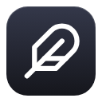

feather
Quality of life for Helium ·
Command bar
A floating search and address bar over any page. Search tabs, bookmarks and history, or the web with !bangs.
A page you're on
Appearance
Theme
How much of the page shows through the bar.
SolidClear
Accent
How many results fit before the list scrolls.
Darken the page a little while the bar is open.
Search
Enter opens results in
For searches, bookmarks and history. Addresses you type always open in a new tab. Alt+Enter does the other.
Fill in sites you've visited as you type, like
you → youtube.com.Sends what you type to DuckDuckGo to get suggestions.
Show results from
Your bangs
Type !name anywhere in the bar to search a site directly. Put %s in the address where your search should go. Your bangs win over the built-in ones, and any bang feather doesn't know goes through DuckDuckGo.
Tabs
Zen-style pinned tabs.
Pinned tabs
It stays pinned and reloads when you open it again. When every pinned tab is unloaded, you land on feather's empty page. Uses the Close tab shortcut below.
Pages
feather's new tab page, and the empty page you land on after closing your last tab.
Background
Wallpaper
Choose your desktop wallpaper and feather lines it up with your screen, so its pages look see-through.
A browser page can't be truly transparent, so this shows a copy of your wallpaper. If you change your wallpaper, choose it here again. Animated wallpapers show as a still image.
Shortcuts
Shortcuts are set on your browser's shortcuts page, which is where Change takes you.
Open or close the command bar
Close tab
Open settings